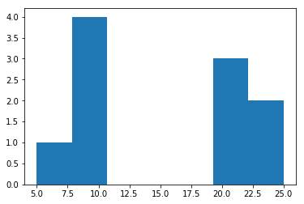

Chapter 1¶
1.1 Probability¶
1.1.1 Moments of Measured Data¶
Arrays of data, and their average and sum in python
import matplotlib.pyplot as plt
from numpy import array, sin, sqrt, dot, outer
%matplotlib inline
x = array([1,2,3])
x.sum()
6
x.mean()
2.0
The formal definition (and to make sure we match with the book) is to take the sum and divide by the number of items in the sample:
x.sum()/len(x)
2.0
Higher order moments¶
Operate on the sample, python does this element-by-element, then do the same thing as above:
x**2
array([1, 4, 9])
(x**2).sum() # Note the parenthesis!
14
(x**2).sum()/len(x)
4.666666666666667
It works for functions too:¶
sin(x)
array([ 0.84147098, 0.90929743, 0.14112001])
sin(x).sum()/len(x)
0.63062947323114849
Variance¶
x.var() # Variance
0.66666666666666663
x.std() # Standard Deviation
0.81649658092772603
x.std()**2 == x.var() # Related by a square root
True
Example 1.1¶
x_m = array([9,5,25,23,10,22,8,8,21,20])
x_m.mean()
15.1
(x_m**2).sum()/len(x_m)
281.30000000000001
sqrt(281.3 - (15.1)**2)
7.3000000000000016
x_m.std()
7.2999999999999998
Close enough!
1.1.2 Probability¶
Example 1.2¶
n, bins, patches = plt.hist(x_m,bins=7)

The hist function has several possible arguments, we use bins=7 to match the example.
n/10.0*array([6,9,12,15,18,21,24]) # counts times each bin-center value
array([ 0.6, 3.6, 0. , 0. , 0. , 6.3, 4.8])
sum(_)
15.300000000000001
n/10.0*array([6,9,12,15,18,21,24])**2 # counts times each bin-center value
array([ 3.6, 32.4, 0. , 0. , 0. , 132.3, 115.2])
sum(_)
283.5
1.2 Linear Algebra¶
1.2.1 Vectors and Basis sets¶
We’ll use the qutip library, even though this is all just linear algebra:
rvec = array([1,2]) # A row vector
rvec
array([1, 2])
cvec = array([[1],[2]]) # A column vector
cvec
array([[1],
[2]])
cvec*rvec # Actually the outer product:
array([[1, 2],
[2, 4]])
dot(rvec,cvec)
array([5])
outer(cvec,rvec)
array([[1, 2],
[2, 4]])
dot(cvec,rvec) # This doesn't work!
---------------------------------------------------------------------------
ValueError Traceback (most recent call last)
<ipython-input-36-6f8f12690f15> in <module>()
----> 1 dot(cvec,rvec) # This doesn't work!
ValueError: shapes (2,1) and (2,) not aligned: 1 (dim 1) != 2 (dim 0)